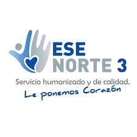

Kenner Jesus
Zambrano Gómez
Ingeniero de Sistemas
Popayán, Cauca, 190001
3118747097
CEO de DigitalMinds23
EXPERIENCIA LABORAL
 EMPRESA SOCIAL DEL ESTADO NORTE 3 ESE
Ingeniero de Sistemas | Puerto Tejada, Cauca | 2024 - 2025
Me desempeñé como ingeniero de sistemas, administrando el sistema hospitalario y asegurando su estabilidad, seguridad y optimización. Implementé la política de Gobierno Digital desde cero, estableciendo una infraestructura tecnológica robusta que protegió la integridad de los datos en un 99.9 %. Además, dentro de la entidad, fui subcoordinador del programa del Ministerio de Salud para los Equipos Básicos de Salud y del Plan de Intervenciones Colectivas Departamental, liderando la digitalización y automatización de procesos clave, logrando un cumplimiento del 100 %. También impulsé la adopción de nuevas herramientas digitales, capacitando al talento humano y mejorando la eficiencia operativa.
EDUCACIÓN
Fundación Universitaria de Popayán
Ingeniero de Sistemas
Ingeniero de Sistemas y Desarrollador Full Stack con amplios conocimientos en múltiples lenguajes y tecnologías avanzadas. Mi carrera es clave en la docencia, ya que permite formar a estudiantes en habilidades altamente demandadas, brindándoles herramientas para desarrollar soluciones innovadoras y adaptarse a los avances tecnológicos.
Fundación Universitaria de Popayán
Seminario Desarrollo de aplicaciones web full stack para la solución de problemáticas.
Este curso, clave en el desarrollo digital actual, me ha fortalecido en Full Stack, permitiéndome crear soluciones escalables y compartir conocimientos actualizados, esenciales para formar futuros desarrolladores.
Dirección Nacional de Escuelas, Policía Nacional de Colombia
Técnico Laboral por Competencias en Asistencia Social y Comunitaria
Una formación clave en la docencia, ya que brinda a los estudiantes herramientas esenciales para el trabajo social, permitiéndoles generar un impacto positivo en la comunidad y responder a sus necesidades.
HABILIDADES
Habilidad en Docencia
Capacidad para impartir conocimiento de manera efectiva, logrando captar el interés de los estudiantes y adaptando la enseñanza a diferentes niveles de comprensión.
Estrategias de Enseñanza
Metodologías de enseñanza dinámicas e interactivas, fomentando el aprendizaje práctico y la resolución de problemas reales.
Trabajo en Equipo
Adaptabilidad a distintos equipos de trabajo y metodologías, promoviendo un ambiente colaborativo.
Educación Digital
Uso de herramientas tecnológicas para la educación, integrando plataformas virtuales y entornos de desarrollo en el proceso de enseñanza.
Pensamiento Crítico
Pensamiento crítico y resolución de problemas, inculcando en los estudiantes una mentalidad analítica para abordar desafíos tecnológicos.
Innovación en Educación Digital
Actualización constante en tendencias tecnológicas, transmitiendo conocimientos alineados con las demandas del sector.
PRÁCTICAS PROFESIONALES
Fundación Universitaria de Popayán
Popayán Cauca ago.2023 - nov. 2023
Durante mi práctica profesional, desempeñé el rol de docente durante un semestre, impartiendo un curso sobre HTML5, CSS y creación de páginas web con WordPress. En este proceso, logramos certificar a más de 28 estudiantes, quienes destacaron la calidad y utilidad del conocimiento adquirido. Esta experiencia no solo fue exitosa en términos de aprendizaje, sino que también reafirmó mi pasión por la enseñanza, demostrando mi capacidad para guiar y motivar a los estudiantes en su formación.